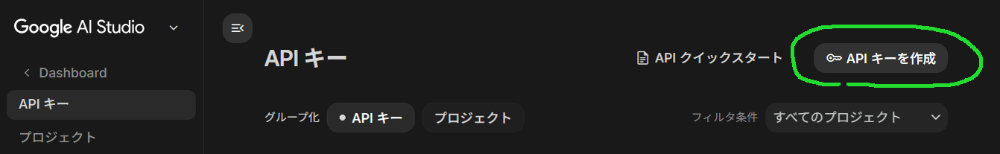
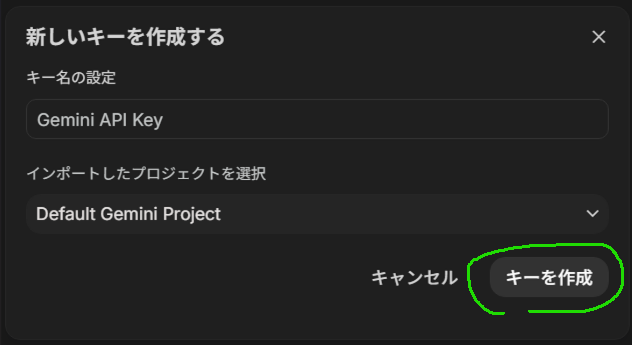
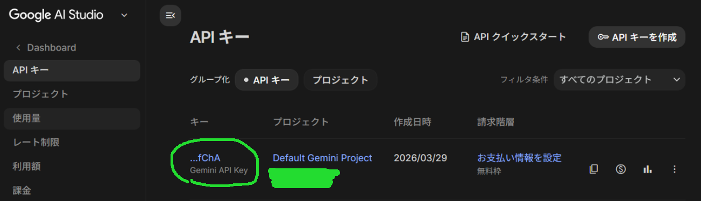
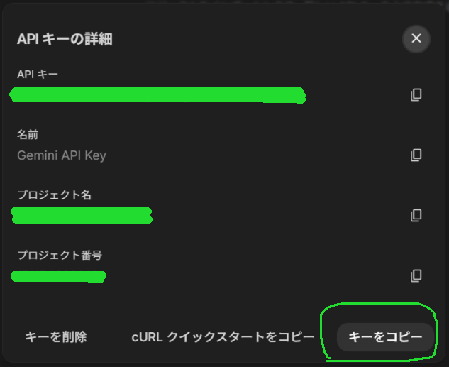
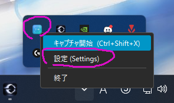
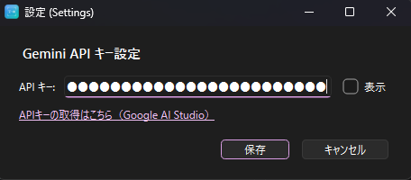
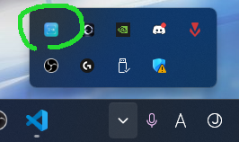

Capture & Translate App
画面キャプチャ + OCR + AI翻訳 デスクトップツール
公式マニュアル
Capture & Translate App の公式マニュアルへようこそ。
このページでは、無料版・有料版（Pro版）共通の操作方法・機能・トラブルシューティングをまとめています。
初めての方もご安心ください。基本操作から応用設定まで順を追ってご説明します。
📋1. アプリの概要
このアプリは、画面の任意の範囲をドラッグ選択し、最前面にキャプチャした画像を表示することができます。 キャプチャした画像には マーカー（ペンツール） で自由に線や書き込みを直接描き込むことができ、 ちょっとした比較・メモ・アノテーションを手軽に行えます。 描いた内容は Ctrl+Z で1ステップずつ元に戻すことができ、 右クリックメニューの「画像を保存...」からマーカー込みのまま PNG / JPEG ファイルとして保存できます。 さらに、選択領域のテキストを EasyOCR で読み取って Gemini API で 日本語に自動翻訳することもできるデスクトップツールです。
システムトレイに常駐するため、他のアプリを使いながらでも グローバルショートカット Ctrl+Shift+X ですぐにキャプチャを開始できます。
- 対応OS: Windows 10 / 11（マルチモニター・高DPI環境対応）
- OCRエンジン: EasyOCR（多言語テキスト認識）
- 翻訳エンジン: Gemini API（Google AI）
- 翻訳方向: 任意の言語 → 日本語（言語は自動検出）
タスクトレイのアイコンを右クリックし、設定画面からご自身の Gemini API キーを登録することで高品質な翻訳が利用可能になります。API キーは Google AI Studio から無料で取得できます。
⚙️2. 初期設定（APIキーの取得と登録）
アプリの翻訳機能を利用するには、Google が無料で提供している「Gemini API キー」の登録が必要です。 以下の手順で取得し、アプリに設定してください。
画面キャプチャやマーカー（描画）機能のみを利用し、翻訳機能を使わない場合は、APIキーの設定は不要です。そのままアプリをご利用いただけます。
-
Google AI Studio にアクセスし、Google アカウントでログインします。
https://aistudio.google.com/app/api-keys -
画面左側の 「Get API key」 メニューを開き、「Create API key」 ボタンをクリックします。


-
生成された API キー（長い文字列）の横にある 「コピー」 ボタンを押して、キーをクリップボードにコピーします。


-
アプリのタスクトレイアイコンを右クリックして「設定」を開き、コピーした API キーを貼り付けて「保存」をクリックします。


🖱️3. 基本的な使い方
3-1. アプリの起動
- アプリの実行ファイル（
CaptureTransApp.exe）をダブルクリックして起動します。 - 初回起動時は必要なファイルの準備（モデルダウンロード等）が行われます。しばらくお待ちください。
- 起動が完了すると、タスクバー右下のシステムトレイにアイコンが表示されます。

3-2. ドラッグでキャプチャ
-
グローバルショートカット Ctrl+Shift+X を押します。
※ トレイアイコンのダブルクリック、または右クリックメニューの「キャプチャ開始」からも起動できます。 - 画面全体が半透明のオーバーレイで覆われます。
- 翻訳したいテキストが含まれる領域を左ボタンでドラッグして範囲選択します。
- マウスボタンを離すと、選択範囲がキャプチャされ結果ウィンドウが開きます。
3-3. 翻訳結果の確認
- キャプチャ後、結果ウィンドウが表示されます。上部にキャプチャ画像、下部に翻訳結果テキストが表示されます。
- T キーを押すと OCR + 翻訳が実行され、翻訳テキストが表示されます。
- 翻訳が完了すると、ウィンドウ下部に日本語訳が表示されます。
- 確認が終わったら Esc キーでウィンドウを閉じます。
✨4. 便利な機能
4-1. T / C キーの詳細動作
結果ウィンドウでは T（翻訳）と C（原文）の 2 種類のキーを使い分けて、翻訳テキストまたは OCR 原文を表示・コピーできます。
| 操作 | 動作 |
|---|---|
| T キー（1回目） | OCR を実行して翻訳結果を表示（Gemini API を呼び出し） |
| T キー（翻訳表示中・2回目） | 翻訳テキストをクリップボードにコピー （ツー・ステップ・アクション） |
| C キー（1回目） | OCR を実行して原文テキストを表示 |
| C キー（原文表示中・2回目） | 原文テキストをクリップボードにコピー （ツー・ステップ・アクション） |
4-2. マーカー（描画）機能
結果ウィンドウに表示されたキャプチャ画像に、マウスで直接線（マーカー）を描き込むことができます。 強調したい箇所を囲んだり、注釈を書き込んだりするのに便利です。
- Ctrl キーを押しながら画像上で左ボタンドラッグすると描画モードになり、ドラッグした軌跡に線が描かれます。
- 右クリックメニューの「線の色 (L)...」から線の色を変更できます（アルファ値も設定可）。
- 右クリックメニューの「線の太さ (W)」サブメニューから 1 / 3 / 5 / 8 / 12 px の太さを選択できます。
- 描き間違えた場合は Ctrl+Z で1ストローク単位で元に戻せます（最大 20 ステップ）。
- 描き込んだ状態を保存したいときは右クリック → 「画像を保存...」を選択し、PNG または JPEG で保存します。
4-3. ショートカットキー一覧
グローバルショートカット（アプリ非アクティブ時も有効）
| キー | 動作 |
|---|---|
| Ctrl+Shift+X | キャプチャモードを開始する |
キャプチャモード中（オーバーレイ表示中）
| キー / 操作 | 動作 |
|---|---|
| 左ドラッグ | 翻訳する範囲を選択 |
| Esc | キャンセルしてオーバーレイを閉じる |
結果ウィンドウ内
| キー / 操作 | 動作 |
|---|---|
| T | OCR 実行 → 翻訳表示 / 翻訳テキストをコピー（2回目） |
| C | OCR 実行 → 原文表示 / 原文テキストをコピー（2回目） |
| Esc | 結果ウィンドウを閉じる |
| Ctrl+左ドラッグ | 画像にマーカー線を描き込む |
| Ctrl+Z | 描き込んだ線を1ストローク元に戻す（Undo、最大20回） |
| 右クリック | コンテキストメニューを表示（翻訳・コピー・色設定・画像保存など） |
トレイアイコン操作
| 操作 | 動作 |
|---|---|
| ダブルクリック | キャプチャモードを開始する |
| 右クリック | メニューを表示（キャプチャ開始 / 設定 / 終了） |
4-4. 右クリックメニュー一覧
結果ウィンドウ内で右クリックすると表示されるコンテキストメニューの項目一覧です。
| メニュー項目 | 動作 |
|---|---|
| 翻訳を表示/非表示 [T] | 翻訳結果エリアの表示・非表示をトグルする |
| 原文を表示/非表示 [C] | OCR 原文エリアの表示・非表示をトグルする |
| 翻訳をコピー | 翻訳テキストをクリップボードにコピー（翻訳表示中のみ） |
| 原文をコピー | OCR 原文テキストをクリップボードにコピー（原文表示中のみ） |
| 線の色 (L)... | マーカーの色をカラーピッカーで変更する（アルファ値も設定可） |
| 線の太さ (W) ▶ | マーカーの太さを 1 / 3 / 5 / 8 / 12 px から選択する |
| 画像を保存... | マーカーの描き込みを含めた現在の画像を PNG または JPEG で保存する |
| ウィンドウを閉じる [Esc] | 結果ウィンドウを閉じる |
| 最前面固定を解除 | ウィンドウの最前面表示を解除（または再固定）する |
4-5. 動作ログの確認と保存場所
アプリの動作状況はログファイルに自動記録されます。問題発生時の調査や動作確認に活用できます。
ログファイルの保存場所:
エクスプローラーのアドレスバーに %LOCALAPPDATA%\CaptureTransApp\logs\ と入力すると素早く開けます。
ローテーション仕様:
- 最大ファイルサイズ: 1 MB / ファイル
- 保存世代数: 5 世代（
app.log〜app.log.5） - 合計最大容量: 約 6 MB
- 文字コード: UTF-8
[日時] [レベル] [モジュール名] メッセージ です。OCR の認識文字数・翻訳内容のプレビュー・ホットキー登録状況なども記録されます。

🔧5. トラブルシューティング
⚠️「APIキーが無効です」や「⚠️ 利用上限に達しました」と表示される
- トレイアイコンを右クリックして「設定」を開き、正しい Gemini API キーが入力されているか確認してください。
- API キーの先頭・末尾に余分なスペースが入っていないかご確認ください。
- 無料枠の API 上限（1 分あたりのリクエスト数など）に達した場合は、しばらく時間をおいてから再度お試しください。
- API キーの再発行は Google AI Studio から行えます。
⚠️「テキストが検出されませんでした」と表示される
- キャプチャした文字が小さすぎる、または背景と同化している可能性があります。少し広めにキャプチャし直すか、画像を拡大してから再度お試しください。
- フォントサイズが極端に小さい（目安: 画面上で 10px 以下）場合は認識が困難です。なるべく大きく表示されているテキストをキャプチャしてください。
- 背景と文字のコントラストが低い画像（白背景に薄いグレーの文字など）は誤認識が増えます。
- 選択範囲を少し広めに取り、テキストの周囲に余白を含めると認識率が改善することがあります。
ショートカットキー（Ctrl+Shift+X）を押しても反応しない
- 他のアプリ（テキストエディタ、ゲーム等）が同じショートカットを占有している可能性があります。該当アプリを終了してから再試行してください。
- 前回アプリが正常終了しなかった場合、ホットキーの登録が残骸として残ることがあります。タスクマネージャーで
CaptureTransApp.exeプロセスが残っていないか確認し、残っていれば終了させてからアプリを再起動してください。 - ログファイルに
RegisterHotKey 失敗と記録されている場合は上記が原因です。 - 設定画面を開いている間は、誤動作防止のためショートカットが無効になります。設定画面を閉じてから再度お試しください。
- トレイアイコンの右クリックメニューから「キャプチャ開始」を選択すれば、ショートカットなしでもキャプチャを開始できます。
オーバーレイが表示されない・一部のモニターに表示されない
- アプリ起動後にモニターの接続・切断・解像度変更を行った場合、オーバーレイの表示が正しくならないことがあります。アプリを再起動してください。
- ゲームや動画プレイヤーが全画面モードの場合、オーバーレイが隠れることがあります。対象アプリをウィンドウモードにしてから試してください。
OCR がテキストを認識しない・認識精度が低い
- 斜体・手書き・装飾フォントは認識率が下がることがあります。
- 初回起動時の EasyOCR モデルダウンロードが完了していない状態でキャプチャしても認識されません。ログに
OCR 完了が記録されているか確認してください。
翻訳されない・翻訳結果が原文のまま返ってくる
- インターネット接続を確認してください。Gemini API はオンラインで動作します。
- OCR がテキストを認識できていない（空文字列）場合、翻訳は実行されません。まず C キーで原文が正しく取得できているか確認してください。
- ログに
翻訳エラーが記録されている場合はネットワークエラーまたは API エラーの可能性があります。しばらく待ってから再試行してください。
結果ウィンドウが画面外に出てしまった
- タスクバーのウィンドウを右クリックし「移動」を選択して、キーボードの矢印キーで画面内に戻してください。
- 一度アプリを終了して再起動すると、ウィンドウ位置がリセットされます。
アプリが起動しない・クラッシュする
- ログファイル（
%LOCALAPPDATA%\CaptureTransApp\logs\app.log）にERRORまたは未捕捉例外が記録されていないか確認してください。 - Visual C++ 再頒布可能パッケージ（x64）が不足している場合にクラッシュすることがあります。Microsoft 公式サイトから最新版をインストールしてください。
- ウイルス対策ソフトが EXE をブロックしている場合は、例外設定に追加してください。